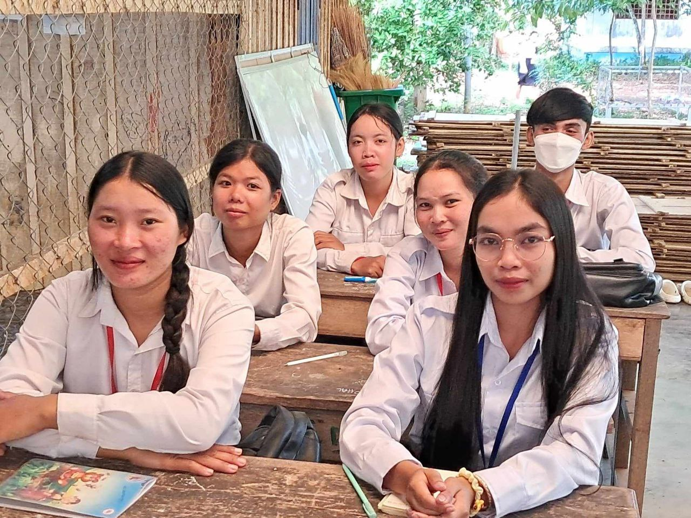
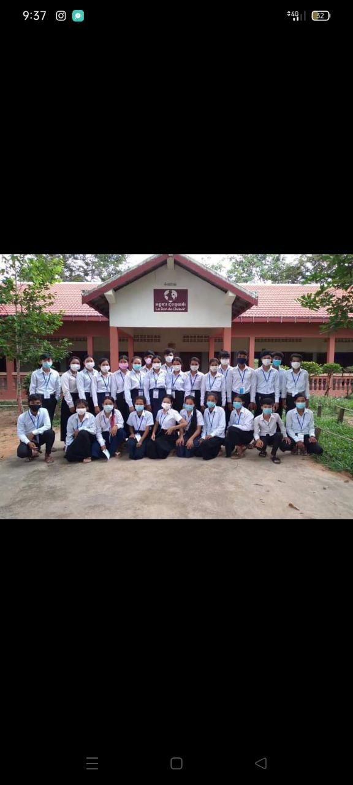
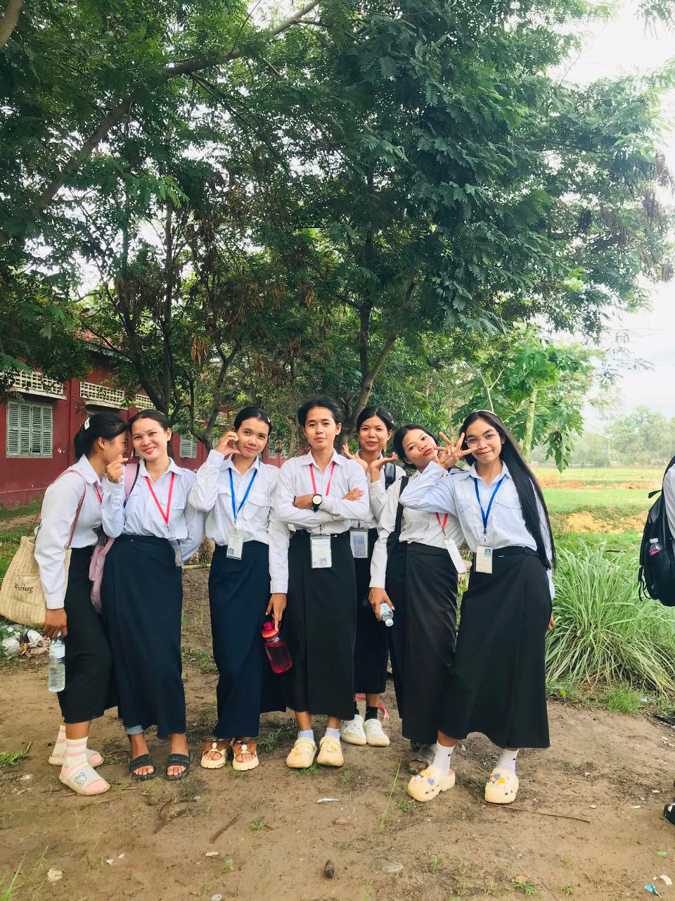
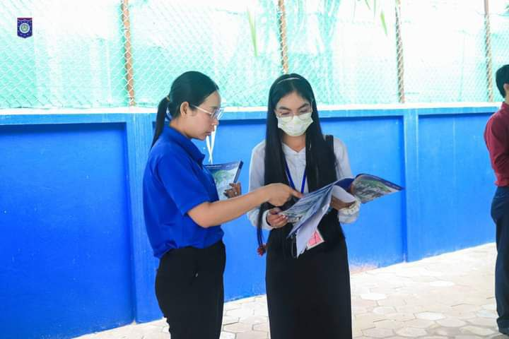
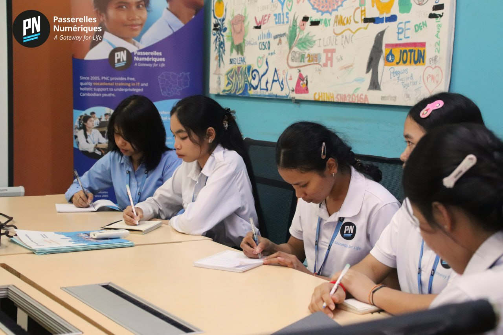

Education & Certifications
My academic background and professional certifications





Baccalaureate II
Hun Sen Prasat Bakong High School, Siem Reap
I finished high school with a Grade B result. This achievement helped me earn scholarships to Passerelles Numériques Cambodia (PNC) and Enfants du Mékong.
2023-2024


.JPG)
Associate Degree in Web Development
Passerelles Numériques Cambodia (PNC)
Currently pursuing Web Development major with hands-on experience in building frontend web applications, server-side features using PHP/Laravel and JavaScript, Git, Docker, AWS, and API testing with Postman.
2025-2026



Workshops & Certifications
Multiple Institutions
2024: Negotiation Skills (Blan Smit Hotel, Siem Reap), Orientation Platform
(Enfants du Mékong, Serey Sopon), Goal Setting (Don du Chœur, Siem Reap), Process to past BacII
(Bakong High School)
2025: Bank & IT (APD Bank, Phnom Penh), DDOS Attack (CADT, Phnom Penh)
2026: Learn from Company (Coding Gate & Khmer AI), Digital with work (Source
Omax Asea)




Social Action & Leadership
Children's Council & Volunteer Work
Served as Teacher Assistant, participated in Don du Chœur's Public Presentations, and actively involved in Children's Council actions. These experiences developed my leadership, communication, and teamwork skills.
2024-2026